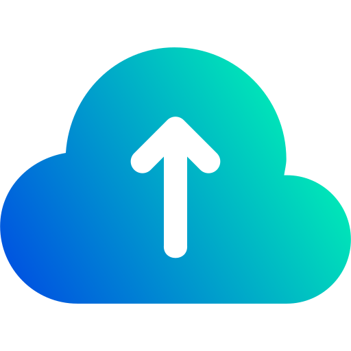

Conecte sua conta
A autorização acontece no Google. O DriveFlow recebe as permissões aprovadas por você e não solicita sua senha Google.

DriveFlowO DriveFlow organiza o envio dos arquivos que você seleciona para o seu Google Drive. Com o monitoramento opcional, você acompanha o progresso de computadores pareados pelo celular.
A autorização acontece no Google. O DriveFlow recebe as permissões aprovadas por você e não solicita sua senha Google.
Selecione arquivos e destino. Acompanhe progresso e velocidade, pause os envios e retome quando a sessão e o arquivo permitirem.
Habilite o Firebase no Windows e escaneie o QR no DriveFlow Monitor. O Android consulta o estado das máquinas autorizadas.
O acesso ao Google Drive permite enviar arquivos e consultar as pastas de destino. A opção de acessar pastas existentes solicita uma permissão mais ampla, usada para navegação e envio no Drive autorizado.
O Firebase, quando habilitado, recebe metadados do upload — como nome do arquivo, destino e progresso. O conteúdo dos arquivos é enviado ao Google Drive, não à telemetria Firebase.
DriveFlow é um projeto independente mantido por Gustavo Toigo. Não é um produto do Google. Esta página apresenta o software; não oferece acesso aos arquivos, às credenciais ou ao painel de monitoramento do usuário.
Dúvidas: gustavo.toigo@gmail.com.